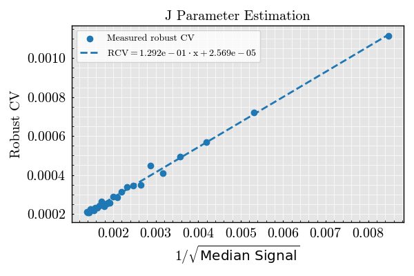

Note
Go to the end to download the full example code.
J Estimator Validation — Fixed Bead Size, Variable Illumination#
This example estimates the J parameter, which quantifies how the robust coefficient of variation scales with signal strength under varying illumination power.
The relationship is assumed to follow:
robust_cv ≈ J / sqrt(median_signal)
We simulate a flow cytometry system with fixed bead diameter and vary illumination power across multiple runs.
Setup and configuration#
import matplotlib.pyplot as plt
import numpy as np
from TypedUnit import ureg
from FlowCyPy import FlowCytometer
from FlowCyPy.fluidics import (
FlowCell,
Fluidics,
ScattererCollection,
SheathFlowRate,
SampleFlowRate,
)
from FlowCyPy.fluidics.populations import SpherePopulation
from FlowCyPy.opto_electronics import (
Detector,
circuits,
Digitizer,
OptoElectronics,
Amplifier,
source,
)
from FlowCyPy.digital_processing import (
DigitalProcessing,
peak_locator,
discriminator,
)
np.random.seed(3)
Helper functions#
def compute_signal_statistics(data: np.ndarray) -> dict:
"""
Compute robust and standard statistics from an event signal array.
"""
if data.size == 0:
raise ValueError("Signal array is empty.")
median = np.median(data)
percentile_84 = np.percentile(data, 84.13)
percentile_15 = np.percentile(data, 15.87)
mean = np.mean(data)
std = np.std(data)
robust_std = (percentile_84 - percentile_15) / 2.0
coefficient_of_variation = std / median if median != 0 else np.nan
robust_coefficient_of_variation = robust_std / median if median != 0 else np.nan
return {
"mean": mean,
"median": median,
"std": std,
"cv": coefficient_of_variation,
"robust_std": robust_std,
"robust_cv": robust_coefficient_of_variation,
}
def get_peaks(
flow_cytometer: FlowCytometer,
opto_electronics,
digital_processing,
run_time=1.5 * ureg.millisecond,
debug_mode=False,
):
"""
Run the flow cytometer and return the detected peaks.
"""
results = flow_cytometer.run(
opto_electronics=opto_electronics,
digital_processing=digital_processing,
run_time=run_time,
)
if debug_mode:
results.plot_analog()
plt.show()
results.plot_digital()
plt.show()
return results.peaks
def run_experiment(
flow_cytometer: FlowCytometer,
opto_electronics,
digital_processing,
bead_diameter,
illumination_power,
concentration,
run_time,
debug_mode=False,
):
"""
Configure the population and source power, then run one experiment.
"""
population = SpherePopulation(
name="population",
concentration=concentration,
diameter=bead_diameter,
medium_refractive_index=1.33,
refractive_index=1.47,
)
flow_cytometer.fluidics.scatterer_collection.populations = [population]
opto_electronics.source.optical_power = illumination_power
return get_peaks(
flow_cytometer=flow_cytometer,
opto_electronics=opto_electronics,
digital_processing=digital_processing,
run_time=run_time,
debug_mode=debug_mode,
)
def estimate_j(medians: np.ndarray, robust_cvs: np.ndarray):
"""
Estimate J from a linear fit of robust_cv versus 1 / sqrt(median).
"""
if medians.size < 2:
raise ValueError("At least two measurements are required to estimate J.")
x = 1.0 / np.sqrt(medians)
y = robust_cvs
slope, intercept = np.polyfit(x, y, 1)
return slope, intercept
def plot_j_estimation(medians: np.ndarray, robust_cvs: np.ndarray):
"""
Plot robust CV versus 1 / sqrt(median) and its linear fit.
"""
if medians.size < 2:
raise ValueError("At least two measurements are required to plot J estimation.")
x = 1.0 / np.sqrt(medians)
y = robust_cvs
slope, intercept = np.polyfit(x, y, 1)
x_fit = np.linspace(np.min(x), np.max(x), 200)
y_fit = slope * x_fit + intercept
figure, axes = plt.subplots(figsize=(6, 4))
axes.scatter(x, y, label="Measured robust CV", zorder=3)
axes.plot(
x_fit,
y_fit,
"--",
label=rf"$RCV = {slope:.3e} \cdot x + {intercept:.3e}$",
zorder=2,
)
axes.set(
xlabel=r"$1 / \sqrt{\mathrm{Median\ Signal}}$",
ylabel="Robust CV",
title="J Parameter Estimation",
)
axes.legend()
return figure, slope, intercept
Construct simulation components#
flow_cell = FlowCell(
sample_volume_flow=SampleFlowRate.MEDIUM.value,
sheath_volume_flow=SheathFlowRate.MEDIUM.value,
width=177 * ureg.micrometer,
height=433 * ureg.micrometer,
event_scheme="linear",
perfectly_aligned=True,
)
scatterer_collection = ScattererCollection()
fluidics = Fluidics(
scatterer_collection=scatterer_collection,
flow_cell=flow_cell,
)
illumination_source = source.Gaussian(
waist_z=10 * ureg.micrometer,
waist_y=60 * ureg.micrometer,
wavelength=450 * ureg.nanometer,
optical_power=0 * ureg.watt,
include_shot_noise=True,
include_rin_noise=False,
)
digitizer = Digitizer(
bit_depth=20,
min_voltage=0 * ureg.volt,
max_voltage=10_000 * ureg.microvolt,
sampling_rate=60 * ureg.megahertz,
)
amplifier = Amplifier(
gain=10 * ureg.volt / ureg.ampere,
bandwidth=20 * ureg.megahertz,
voltage_noise_density=0 * ureg.volt / ureg.sqrt_hertz,
current_noise_density=0 * ureg.ampere / ureg.sqrt_hertz,
)
detector_0 = Detector(
name="default",
phi_angle=0 * ureg.degree,
numerical_aperture=0.2,
cache_numerical_aperture=0.0,
responsivity=1 * ureg.ampere / ureg.watt,
dark_current=0 * ureg.ampere,
)
baseline_restoration = circuits.BaselineRestorationServo(
time_constant=10 * ureg.microsecond
)
opto_electronics = OptoElectronics(
detectors=[detector_0],
digitizer=digitizer,
analog_processing=[baseline_restoration],
source=illumination_source,
amplifier=amplifier,
)
peak_algorithm = peak_locator.GlobalPeakLocator()
dynamic_window_discriminator = discriminator.DynamicWindow(
trigger_channel="default",
threshold=100
* ureg.microvolt, # Absolute threshold to ensure detection at low illumination
pre_buffer=200,
post_buffer=200,
)
digital_processing = DigitalProcessing(
peak_algorithm=peak_algorithm,
discriminator=dynamic_window_discriminator,
)
flow_cytometer = FlowCytometer(
fluidics=fluidics,
background_power=illumination_source.optical_power * 0.00,
)
Run J estimation simulation#
debug_mode = False
run_time = 10 * ureg.millisecond
bead_diameter = 1000 * ureg.nanometer
concentration = 2.5e7 * ureg.particle / ureg.milliliter / 1
illumination_powers = np.linspace(10, 380, 25) * ureg.milliwatt
medians = []
robust_stds = []
robust_cvs = []
valid_illumination_powers = []
for index, illumination_power in enumerate(illumination_powers):
print(
f"[INFO] Running simulation {index + 1}/{len(illumination_powers)} "
f"at {illumination_power}"
)
peaks = run_experiment(
flow_cytometer=flow_cytometer,
opto_electronics=opto_electronics,
digital_processing=digital_processing,
bead_diameter=bead_diameter,
illumination_power=illumination_power,
concentration=concentration,
run_time=run_time,
debug_mode=debug_mode,
)
if "Height" not in peaks:
raise KeyError("The peaks dataframe does not contain a 'Height' column.")
signal_array = peaks["Height"].values.astype(float)
if signal_array.size < 3:
print(
f"[WARNING] Skipping {illumination_power} because only "
f"{signal_array.size} peak(s) were detected."
)
continue
statistics = compute_signal_statistics(signal_array)
medians.append(statistics["median"])
robust_stds.append(statistics["robust_std"])
robust_cvs.append(statistics["robust_cv"])
valid_illumination_powers.append(illumination_power)
if debug_mode:
print(f"[DEBUG] Median: {statistics['median']:.3e}")
print(f"[DEBUG] Robust STD: {statistics['robust_std']:.3e}")
print(f"[DEBUG] Robust CV: {statistics['robust_cv']:.5f}")
medians = np.asarray(medians, dtype=float)
robust_stds = np.asarray(robust_stds, dtype=float)
robust_cvs = np.asarray(robust_cvs, dtype=float)
if medians.size < 2:
raise ValueError("Not enough valid measurements were collected to estimate J.")
[INFO] Running simulation 1/25 at 10.0 milliwatt
[INFO] Running simulation 2/25 at 25.416666666666664 milliwatt
[INFO] Running simulation 3/25 at 40.83333333333333 milliwatt
[INFO] Running simulation 4/25 at 56.25 milliwatt
[INFO] Running simulation 5/25 at 71.66666666666666 milliwatt
[INFO] Running simulation 6/25 at 87.08333333333333 milliwatt
[INFO] Running simulation 7/25 at 102.5 milliwatt
[INFO] Running simulation 8/25 at 117.91666666666666 milliwatt
[INFO] Running simulation 9/25 at 133.33333333333331 milliwatt
[INFO] Running simulation 10/25 at 148.75 milliwatt
[INFO] Running simulation 11/25 at 164.16666666666666 milliwatt
[INFO] Running simulation 12/25 at 179.58333333333331 milliwatt
[INFO] Running simulation 13/25 at 195.0 milliwatt
[INFO] Running simulation 14/25 at 210.41666666666666 milliwatt
[INFO] Running simulation 15/25 at 225.83333333333331 milliwatt
[INFO] Running simulation 16/25 at 241.25 milliwatt
[INFO] Running simulation 17/25 at 256.66666666666663 milliwatt
[INFO] Running simulation 18/25 at 272.0833333333333 milliwatt
[INFO] Running simulation 19/25 at 287.5 milliwatt
[INFO] Running simulation 20/25 at 302.91666666666663 milliwatt
[INFO] Running simulation 21/25 at 318.3333333333333 milliwatt
[INFO] Running simulation 22/25 at 333.75 milliwatt
[INFO] Running simulation 23/25 at 349.16666666666663 milliwatt
[INFO] Running simulation 24/25 at 364.5833333333333 milliwatt
[INFO] Running simulation 25/25 at 380.0 milliwatt
Estimate J#
j_slope, j_intercept = estimate_j(
medians=medians,
robust_cvs=robust_cvs,
)
j_estimate = j_slope * ureg.AU**0.5
print("")
print("J estimation results")
print(f"Estimated J: {j_estimate}")
print(f"Linear intercept: {j_intercept:.6e}")
J estimation results
Estimated J: 0.12918038647590316 dimensionless
Linear intercept: 2.569289e-05
Plot estimation and diagnostics#
figure_j, _, _ = plot_j_estimation(
medians=medians,
robust_cvs=robust_cvs,
)
plt.show()

Total running time of the script: (1 minutes 24.953 seconds)